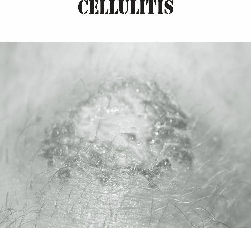
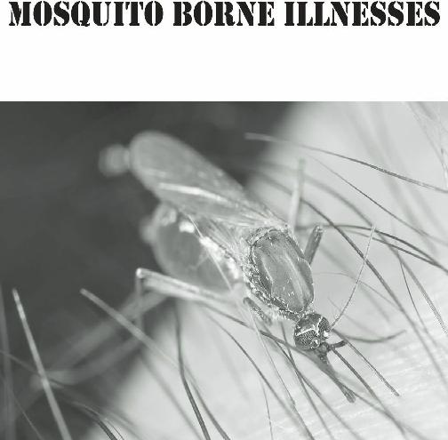
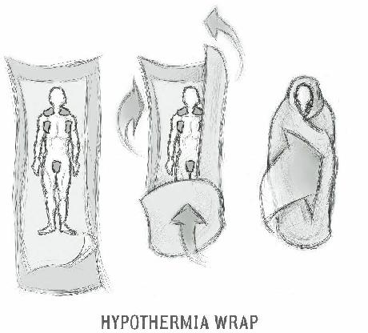
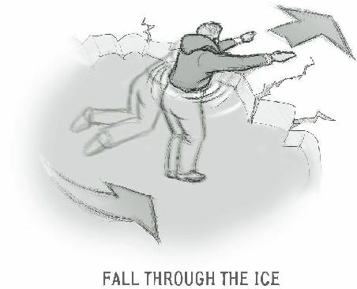

Diverticulitis

Diverticulitis, unlike appendicitis, is seen mostly in older patients. Diverticula are small pouches in the large bowel that resemble an inner tube peeking out of a defect in an old-timey car tire. These areas may become blocked just like the appendix might. The symptoms are very similar, but most diverticulitis patients will complain of pain in the lower left quadrant instead of the right.
Other inflammatory conditions in the bowel, such as
Crohn’s Disease or Ulcerative Colitis, may present with pelvic pain. These are commonly treated with steroids but may require surgery, as well.
Pelvic Inflammatory Disease
A female pelvic infection often caused by sexually transmitted diseases, such as gonorrhea or chlamydia, may imitate some of the symptoms of an inflamed appendix. This is known as Pelvic Inflammatory Disease
(also called “PID”). These patients will, however, usually have pain on both sides of the lower abdomen, associated with fever and, sometimes, a foul vaginal discharge.
Pelvic Inflammatory Disease can cause major damage to internal female anatomy. Scarring ensues as the body tries to heal, sometimes causing infertility and chronic discomfort. Serious female infections involving the pelvis are best treated with antibiotics such as
Doxycycline, sometimes in combination with
Metronidazole twice a day for a week. It is a good idea to treat sexual partners.
Ovarian Cysts
Other female issues in the pelvis, such as large or ruptured ovarian cysts, could also cause pain due to pressure or bleeding. An ovarian cyst is an accumulation of fluid within an ovary that is surrounded by a wall.
Many arise from egg follicles, but other can be benign or, less often, cancerous tumors.
Most cysts cause pain by rupturing; a rupture may either cause a painful irritation of the abdominal lining or an episode of internal bleeding. Sometimes, ovarian cysts go away spontaneously, but a ruptured cyst that is actively bleeding will require surgery. A right-sided ruptured cyst could appear similar to appendicitis as the pain is in the same location.
The diagnosis of appendicitis or other causes of abdominal pain without modern diagnostic equipment will be challenging. Despite this, we have to remember that medical personnel, in the past, had only the physical signs and symptoms to help them reach a diagnosis.
Hopefully, we will never be placed in a situation where modern medical care is not available. Many of the conditions described above will represent a possibly fatal result without the ability to perform surgery or give intravenous medications.
Everyone who expects to be responsible for the medical well-being of their family in hard times, however, will have to rely on the skills and knowledge they have learned BEFORE the tribulations began. It may be all we have in the aftermath of a calamity.

Besides the bowels, our waste is excreted through the urinary tract. The urinary tract includes the kidneys, ureters, bladder, and urethra. It is, essentially, the body’s plumbing.
You might find it interesting to know that urine, although a waste product is normally sterile. Most women, at some time of their lives, have experienced a urinary tract infection, or “UTI”. An infection of the bladder is known as “cystitis”, this type of infection usually affects the urethra (the tube that drains the bladder) as well.
Although men are not immune from a bladder infection, the male urethra is much longer. Therefore, it’s a much longer trip for bacteria to reach the bladder.
Various organisms may cause this infection; E. Coli is the most common.
Some urinary infections are sexually transmitted, such as Gonorrhea. In men, painful urination (also called
“dysuria”) is very common, though most women might only note a yellowish vaginal discharge.
Although painful urination is not uncommon in cystitis, the most common symptom is frequency. Some people notice that the stream of urine is somewhat hesitant (“hesitancy”) or may feel an urgent need to go without warning (“urgency”). If not treated, a bladder infection may possibly ascend to the kidneys, causing an infection known as “pyelonephritis”. This is, again, most commonly caused by the bacterium E. Coli. Once an infections is in the kidney, your patient may experience:
One-sided back or flank pain
Persistent fever and chills
Abdominal pain
Bloody, cloudy, or foul urine
Dysuria
Sweating
Mental changes (in the elderly)
Once the infection is in the kidneys, antibiotics will be necessary. If the infection is not treated, the condition may progress to “sepsis”, where the infection reaches the bloodstream via the kidneys. These patients will show signs of shock, such as rapid breathing, decreased blood pressure, fever and chills, and confusion or loss of consciousness.
Preventative medicine plays a large role in decreasing the likelihood of this problem. Adherence to basic hygienic methods in those at high risk, especially women, is warranted. Standard recommendations include wiping from front to back after urinating or defecating, as well as urinating right after an episode of sexual intercourse. Also, never postpone urinating when there is a strong urge to do so.
Advise your patients to wear cotton undergarments;
this will allow better air circulation in areas that might otherwise encourage bacterial or fungal growth.
Adequate fluid intake is also a key to remaining free of bladder issues. Consider natural diuretics (substances that increase urine output) to flush out your system.
Never postpone urinating when you feel a strong urge to do so.
Treatment revolves around the vigorous administration of fluids. Lots of water will help flush out the infection by decreasing the concentration of bacteria in the bladder or kidney. Applying warmth to the bladder region is soothing for patients with cystitis. Antibiotics are another mainstay of therapy (brand names and veterinary equivalents in parenthesis):
Sulfamethoxazole-trimethoprim (Bactrim,
Septra, Bird-Sulfa)
Amoxicillin (Amoxil, Fish-Mox)
Nitrofurantoin (Macrobid)
Ampicillin (Fish-Cillin)
Ciprofloxacin (Cipro, Fish-Flox)
An over-the-counter medication that eliminates the painful urination seen in urinary infections is
Phenazopyridine (also known as Pyridium, Uristat, Azo, etc.). Don’t be alarmed if your urine turns reddishorange; it is an effect of the drug and is temporary.
Vitamin C supplements are thought to reduce the concentration of bacteria in the urine, and should also be considered.
A few natural remedies for urinary tract infections are listed below:
Garlic or garlic oil (preferably in capsules).
Echinacea extract or tea.
Goldenrod tea with 1-2 tablespoons of vinegar.
Uva Ursi (1 tablet).
Cranberry tablets (1 to 3 pills).
Alka Seltzer in 2 ounces warm water (poured directly over the urethra)
Use any one of these remedies three times per day.
One more alternative that may be helpful is to perform an external massage over the bladder area with
5 drops of lavender essential oil (mixed with castor oil)
for a few minutes. Then, apply a gentle heat source over the area; repeat this 3 to 4 times daily. The combination of lavender/castor oil and warmth may help decrease bladder spasms and pain.

The largest internal organ in the human body is the liver.
This organ is extremely important for survival, and any impairment in its function is dangerous. The liver has many duties, including:
Production of bile to help digestion
Filtration of toxins from the blood (for example, alcohol)
Storage of certain vitamins and minerals
Production of amino acids (for protein synthesis)
Maintenance of normal levels of glucose
(sugar) in the blood
Conversion of glucose to glycogen for storage purposes.
Production of cholesterol
Production of urea (main component in urine)
Processing of old red blood cells
Production of certain hormones
Hepatitis is the term used for inflammation of the liver.
Mostly caused by viruses, this condition causes the inability of the body to process toxins and perform the other functions listed above, and can be life-threatening.
There are various types of Hepatitis, often called
Hepatitis A, Hepatitis B, and Hepatitis C, etc. Hepatitis can also occur due to adverse reactions from drugs and alcohol, among other things.
Hepatitis may be caused by oral/fecal contamination, as well. As such, I was in a quandary regarding whether to put this in the last section on hygiene and sanitation or here. I decided to place it here as some types of liver damage are not hygiene-related, such as those caused by alcohol abuse. Hepatitis can also be spread by sexual contact.
The hepatitis A virus is found in the bowel movements of an infected individual. When a person eats food or drinks water that is contaminated with the virus, they develop a flu-like syndrome that can quickly become serious.
This illness could easily go through an entire community in a very short time. Even now, we are at risk; if a restaurant employee with hepatitis A doesn’t wash his hands after using the bathroom, everyone that eats there may get sick.
The hallmark of hepatitis is “jaundice”. You will find that your patient’s skin and the whites of their eyes will turn yellow. Their urine becomes darker and their stools turn grey. The liver, which can be found on the right side of the abdomen just below the lowest rib, becomes enlarged or tender to the touch. There is also a sensation of itchiness that is felt all over the body. Add to this a feeling of extreme fatigue, weight loss, vague nausea, and sometimes fever. In some circumstances, people with hepatitis may have no symptoms at all and still pass the illness to others.
Hepatitis B can be spread by exposure to infected blood, plasma, semen, and vaginal fluids. Symptoms are usually indistinguishable from Hepatitis A, although they may lead to a chronic condition known as “Cirrhosis”
that leads to permanent liver damage.
In cirrhosis, the functioning cells of the liver are replaced by nodules that do nothing to help metabolism.
Cirrhosis can also be caused by long-term alcohol and chemical abuse. Possible signs and symptoms of liver cirrhosis include “ascites” (accumulation of fluid in the abdomen), varicose veins (enlarged veins, especially in the stomach and esophagus), jaundice and/or swollen ankles. Brain damage is a possibility, due to the accumulation of toxins that are no longer processed by the damaged liver.
About 200 million people are chronically infected with hepatitis C virus throughout the world. It is a blood-borne virus contracted by intravenous drug use, transfusion, and unsafe sexual or medical practices. A percentage of these patients will progress to cirrhosis over time.
There are a number of other types of Hepatitis, all the way to Hepatitis X. The ones discussed are the most common.
Other than making your patient comfortable, there isn’t very much that you will be able to do in an austere setting regarding this condition.
The drugs used for this condition will be unavailable.
Most cases of Hepatitis, however, are self-limited, which means that they will resolve on their own after a period of time. Expect at least 2 – 6 weeks of down time.
There is a vaccine available for Hepatitis B.
You can, however, practice good preventive medicine by encouraging the following policies for your family or community:
Hand washing after using the bathroom and before preparing food.
Wash dishes with soap in hot water.
Avoid eating or drinking anything that may not be properly cooked or filtered.
Make sure children don’t put objects in their mouths.
There are a few “detoxifying” and anti-inflammatory herbal remedies that may help support a liver inflicted with hepatitis. Some of these supplements include:
Milk Thistle
Artichoke
Dandelion
Turmeric
Licorice
Red Clover
Green Tea
remember these are not cures, but may assist your other efforts by having a restorative effect.
Nutritional strategies that may help:
Avoid fatty foods and alcohol
Increase zinc intake
Decrease protein intake
Improve hydration status, especially with herbal teas, vegetable broths and diluted vegetable juices.
In addition to viruses and bacteria, our body may be susceptible to “yeast”. Yeast is a fungus that is onecelled and reproduces by budding off the parent. The human body naturally harbors certain types but can be damaged by others.
Fungal infections may be local, as in vaginal infections, “ringworm”, or “athlete’s foot”, or systemic
(throughout the entire body). Some people are affected by intestinal fungal infections that can affect digestion.
Systemic fungal infections have been blamed for many illnesses, but proven cases seem to occur mostly in the very young or the elderly; those with compromised immune systems can also be affected.
Vaginal Infections
Vaginal yeast infections (also called “Monilia”) are extremely common and are not an indication of a sexually transmitted disease. A woman with a yeast infection will have an odorless thick white discharge reminiscent of cottage cheese. She will complain of vaginal itchiness.
This infection is often easily treated with short courses of over-the-counter creams or vaginal suppositories such as Monistat (miconazole), but may recur. Resistant infections may be treated with prescription Fluconazole (Diflucan) 150mg orally once.
Repeat in 3 days if symptoms persist.
Non-yeast vaginal infections, those caused by bacteria or protozoa, also exist and are called “bacterial vaginosis” and “trichomoniasis”, respectively. These tend to have a foul odor and are treated with a prescription antibiotic/anti-parasitic medication called
Metronidazole (veterinary equivalent: FISH-ZOLE), which is taken orally.
The time-honored vinegar and water douche, performed once a day, is very effective in eliminating minor vaginal infections.
Douche with 1 tablespoon of vinegar to a quart of water. Use this method only until your patient feels better. Women who douche often are, paradoxically,
MORE likely to get yeast infections. This occurs because douching disrupts the normal balance of pH and allows naturally occurring yeast organisms in the vagina to overrun their environment.
Acidophilus supplements, in powder or capsule form, may be a good oral treatment. Cranberry juice and yogurt are good foods for vaginal infections because they change the pH of the organ to a level inhospitable to yeast.
As garlic has both antibacterial and antifungal action, you might consider inserting a clove of garlic wrapped in gauze and placing it in the vagina for no more than 8 hours. Make sure you leave a “tail” of gauze that you can easily reach to remove the garlic.
To relieve itching, sit in a bath of warm water with a few drops of lavender or tea tree oil for 15 minutes.
Repeat as needed.
Oral Infections
A related yeast infection may be seen in the mouth of some infants and others. This infection is known as
“Thrush” and is identified by white patches on the inside of the cheeks, the roof of the mouth, and other areas of the oral cavity. Thrush can cause irritation and the white patches are adherent, causing bleeding if wiped off.
Occasionally, nipple tissue is affected in breastfeeding mothers.
Oral thrush may be treated conventionally with liquid
Fluconazole (Diflucan) once a day for a week. Nystatin, another antifungal, is available as a “swish-and-swallow”
version for oral thrush or can be applied topically four times a day to infected nipples for approximately five to seven days.
Alternative remedies reported to be effective for oral yeast infections include:
Swabbing the oral cavity with yogurt.
Applying acidophilus to nipples or other items likely to go in an infant’s mouth.
Applying white vinegar (distilled) or very dilute baking soda solutions (1 teaspoon to 8 ounces of water) to nipples.
Swabbing the oral area with coconut oil
(virgin).
Athlete’s Foot
Athlete’s foot (also known as “tinea pedis”) is an infection of the skin caused by a type of fungus. This condition may be a chronic issue, lasting for years if not treated. Although usually seen between the toes, you might see it also on other parts of the feet or even on the hands (often between fingers). It should be noted that this problem is contagious, passed by sharing shoes or socks and even by wet surfaces.
Any fungal infection is made worse by moist conditions. People who are prone to Athlete’s foot commonly:
Spend long hours in closed shoes
Keep their feet wet for prolonged periods
Have had a tendency to get cuts on feet and hands
Perspire a lot
To make the diagnosis, look for:
Flaking of skin between the toes or fingers.
Itching and burning of affected areas
Reddened skin
Discolored nails
Fluid drainage from surfaces traumatized by repeated scratching
If the condition is mild, keeping your feet clean and dry may be enough to allow slow improvement of the condition. Oftentimes, however, topical antifungal ointments or powders such as miconazole or clotrimazole are required for elimination of the condition.
In the worst cases, oral prescription antifungals such as fluconazole (Diflucan) are needed. Don’t use anti-itching creams very often, as it keeps the area moist and may delay healing.
A favorite home remedy for Athlete’s Foot involves placing Tea Tree Oil liberally to a foot bath and soak for
20 minutes or so. Dry the feet well and then apply a few drops onto the affected area. Repeat this process twice daily. Try to keep the area as dry as possible between treatments.
For prevention of future outbreaks of Athlete’s Foot, apply tea tree oil once a week before putting on socks and shoes.
Ringworm
Ringworm is just another word for “tinea”. It represents a fungal infection on the surface of the skin. Oftentimes, a second word is added to denote the location of the infection. Therefore, “tinea pedis” is a fungal infection of the foot, or Athlete’s Foot.
The fungus that causes Athlete’s foot is just as likely to affect any other area of the skin. Often, it will appear as a raised, itchy patch that is darker on the outside. As such, it may resemble a sharply-defined ring, and is called “Ringworm”. Ringworm has nothing to do with worms, however.
If Ringworm occurs in a hairy area, it will likely cause bald patches. Consistent scratching at the patches will cause blistering and oozing. Treatment, both conventional and natural, follows a similar process as that described for Athlete’s Foot.
Make sure to:
Keep skin as dry as possible.
Antifungal (Miconazole, Clotrimazole) or drying powders or creams.
Avoid tight-fitting clothing on irritated areas
Wash regularly.
Wash sheets daily.

Any soft tissue injury carries with it a degree of risk when it comes to infection. Infections from minor wounds or insect bites are relatively easy to treat today, due to the wide availability of antibiotics. With major wounds, these medications may actually save a life.
In a survival situation, antibiotics will be precious commodities; they should be dispensed only when absolutely necessary. The misuse of antibiotics, along with their frequent use in livestock, is part of the reason that we’re beginning to see resistant strains of bacteria.
80% of all the antibiotics in use today are given to livestock. Amazingly, this is not to treat infection, but to speed up growth and get meat to market sooner.
Despite your best efforts to care for a wound, there is always a chance that an infection will occur. Infection in the soft tissues below the superficial level of the skin
(the “epidermis”) is referred to as “cellulitis”. Below the epidermis, the main layers of soft tissue are the “dermis”
(you’ve seen this area when you scraped your knee as a kid), the subcutaneous fat, and the muscle layers.
Cellulitis is significant to the preparedness community because it will be very commonly seen in a collapse. Although preventable, the sheer number of cuts, scrapes, and burns will make it one of the most prevalent medical problems. This infection can easily reach the bloodstream, and, without antibiotics, can cause a life-threatening condition known as “sepsis”.
Once sepsis has set in, inflammation of the spinal cord
(“meningitis”) or bony structures (“osteomyelitis”) can further complicate the situation. In the past, people who became septic frequently died.
The bacteria that can cause cellulitis are on your skin right now. Normal inhabitants of the surface of your skin include
Staphylococcus and
Group
A
Streptococcus. They do no harm until the skin is broken. Then, they invade deeper layers where they are not normally seen and start causing inflammation.
Cuts, bites, blisters, or cracks in the skin can all be entry ways for bacteria to cause infections that could be life-threatening if not treated.
Cellulitis, as an aside, has nothing to do with the dimpling on the skin called cellulite. The suffix “-itis”
simply means “inflammation”, so cellulitis simply means
“inflammation of the cells”, appendicitis means
“inflammation of the appendix” and so on…
Conditions that might cause cellulitis are:
Cracks or peeling skin between the toes
Varicose veins/poor circulation
Injuries that cause a break in the skin
Insect bites and stings, animal bites, or human bites
Ulcers from chronic illness, such as diabetes
Use of steroids or other medications that affect the immune system
Wounds from previous surgery
Intravenous drug use
The symptoms and signs of cellulitis are:
Discomfort/pain in the area of infection
Fever and Chills
Exhaustion (fatigue)
General ill feeling (malaise)
Muscle aches (myalgia)
Heat in the area of the infection
Drainage of pus/cloudy fluid from the area of the infection
Redness, usually spreading towards torso
Swelling in the area of infection (causing a sensation of tightness)
Foul odor coming from the area of infection
Other, less common, symptoms that can occur with this disease:
Hair loss at the site of infection
Joint stiffness caused by swelling of the tissue over the joint
Nausea and vomiting
Although the body can sometimes resolve cellulitis on its own, treatment usually includes the use of antibiotics;
these can be topical, oral or intravenous. Most cellulitis will improve and disappear after a 10 – 14 day course of therapy with medications in the Penicillin, Eythromycin, or Cephalosporin (Keflex) families. Amoxicillin and
Ampicillin are particularly popular. If the cellulitis is in an extremity, it is helpful to keep the limb elevated.
Many of these are available in veterinary form without a prescription (see our section on stockpiling medications later in this volume). Acetaminophen
(Tylenol) or Ibuprofen (Advil) is useful to decrease discomfort. Warm water soaks have been used for many years, along with elevation of infected extremities, for symptomatic relief. Over several days, you should see an improvement. It would be wise to complete the full 1014 days of antibiotics to prevent any recurrences.

An abscess is a form of cellulitis that is, essentially, a pocket of pus. Pus is the debris left over from your body’s attempt to eliminate an infection; it consists of white and red blood cells, live and dead organisms, and inflammatory fluid.
If the abscess was not caused by an infected wound or diseased tooth, it is possible that it originated in a
“cyst”, which is a hollow structure filled with fluid.
There are various types of cysts that can become infected and form abscesses:
Sebaceous: skin glands often associated with hair follicles, they are concentrated on the face and trunk.
These cysts produce oily material known as “sebum”.
Inclusion: These occur when skin lining is trapped in deeper layers as a result of trauma. They continue to produce skin cells and grow.
Pilonidal: These cysts are located over the area of the tailbone, and are due to a malformation during fetal development. They easily become infected and require intervention.
The body’s attempt to cure an infection is a good thing. However, abscesses or boils have a tendency to wall off the infection, which also makes it hard for medications like antibiotics to penetrate. As such, you may have to intervene by performing a procedure.
To deal with an abscess, a route must be forged for the evacuation of pus. The easiest way to facilitate this is to place warm moist compresses over the area. This will help bring the infection to the surface of the skin, where it will form a “head” and perhaps drain spontaneously.
This is called “ripening” the abscess. The abscess will go from firm to soft, and have a “whitehead” pimple at the likely point of exit.
If this fails to happen by itself over a few days, you may have to open the boil by a procedure called “incision and drainage” First, apply some ice to the area to help numb the skin. Then, using the tip of a scalpel (a number 11 blade is best), pierce the skin over the abscess where it is closest to the surface. The pus should drain freely, and your patient will probably experience immediate relief from the release of pressure.
Finally, apply some triple antibiotic ointment to the skin surrounding the incision and cover with a clean bandage. Alternatives to triple antibiotic ointment could be:
Lavender essential oil
Tea Tree essential oil
Raw Honey
Incision and drainage may be helpful for dental abscesses as well, but may not save overlying teeth.
Information about how to extract a tooth may be found in the dental section of this book.

Classic position associated with T etanus
Most of us have dutifully gone to get a tetanus shot when we stepped on a rusty nail, but few have any real concept of what Tetanus is and why it is dangerous.
The role of the survival medic is to know the answers to these questions. Knowledge of risks, prevention, and treatment will be the armor plate in your medical defense.
Tetanus (from the Greek word tetanos, meaning tight) is an infection caused by a bacteria called
Clostridium Tetani. The bacteria produces spores
(inactive bacteria-to-be) that primarily live in the soil or the feces of animals. These spores are capable of living for years and are resistant to extremes in temperature.
Tetanus is relatively rare in the United States, with about 50 reported cases a year. Worldwide, however, there are more than 500,000 cases a year. Most victims are found in developing countries in Africa and Asia that have poor immunization programs.
Why should this fact have significance for you and your family? Citizens of developed countries may be thrown into third world status in the aftermath of a mega-catastrophe. Therefore, it’s important to be prepared for third world medical issues. Tetanus is one.
Most tetanus infections occur when a person has experienced a break in the skin. The skin is the most important barrier to infection, and any chink in the armor leaves a person open to infection. The most common cause is some type of puncture wound, such as an insect or animal bite, a splinter, or even that rusty nail.
This is because the tetanus bacterium doesn’t like oxygen, and deep, narrow wounds give less access to it.
Any injury that compromises the skin, however, is eligible: Burns, crush injuries, and lacerations can be entryways for Tetanus bacteria.
When a wound becomes contaminated with Tetanus spores, the spore becomes activated as a full-fledged bacterium and reproduces rapidly. Damage to the victim comes as a result of a strong toxin excreted by the organism known as Tetanospasmin. This toxin specifically targets nerves that serve muscle tissue.
Tetanospasmin binds to motor nerves, causing
“misfires” that lead to involuntary contraction of the affected areas. This neural damage could be localized or can affect the entire body. You would possibly see the classical symptom of “Lockjaw”, where the jaw muscle is taut; any muscle group, however, is susceptible to the contractions if affected by the toxin. This includes the respiratory musculature, which can inhibit normal breathing and become life-threatening.
The most severe cases seem to occur at extremes of age, with newborns and those over 65 most likely to succumb to the disease. Death rates from generalized
Tetanus hover around 25-50%, higher in newborns.
You will be on the lookout for the following early symptoms:
Sore muscles (especially near the site of injury)
Weakness
Irritability
Difficulty swallowing
Lockjaw (also called “Trismus”; facial muscles are often the first affected)
Initial symptoms may not present themselves for up to 2 weeks. As the disease progresses, you may see:
Progressively worsening muscle spasms (may start locally and become generalized over time)
Involuntary arching of the back (sometimes so strong that bones may break or dislocations may occur!)
Fever
Respiratory distress
High blood pressure
Irregular heartbeats
The first thing that the survival medic should understand is that, although an infectious disease, Tetanus is not contagious. You can feel confident treating a Tetanus victim safely, as long as you wear gloves and observe standard clean technique. Begin by washing your hands and putting on your gloves. Then, wash the wound thoroughly with soap and water, using an irrigation syringe to flush out any debris. This will, hopefully, limit growth of the bacteria and, as a result, decrease toxin production.
You will want to administer antibiotics to kill off the rest of the bacteria in the system. Metronidazole
(veterinary equivalent: Fish-Zole) 375-500mg twice a day or Doxycycline (Bird-Biotic) 100 mg twice a day are known to be effective. The earlier you begin antibiotic therapy, the less toxin will be produced. IV rehydration, if you have the ability to administer it, is also helpful.
The patient will be more comfortable in an environment with dim lights and reduced noise.
Late stage Tetanus is difficult to treat with modern technology. Ventilators, Tetanus Antitoxin, and muscle relaxants/sedatives such as Valium are used to treat severe cases but will be unlikely to be available to you in a long term survival situation. For this reason, it is extraordinarily important for the survival medic to watch anyone who has sustained a wound for the early symptoms listed above.
As medic, you must obtain a detailed medical history from anyone that you might be responsible for in times of trouble. This includes immunization histories where possible. Has the injured individual been immunized against Tetanus? Most people born in the U.S. will have gone through a series of immunizations against
Diptheria, Tetanus, and Whooping Cough early in their childhood. If not, encourage them to get up to date with their immunizations against this dangerous disease as soon as possible. Booster injections are usually given every 10 years.
Tetanus vaccine is not without its risks, but severe complications such as seizures or brain damage occur is less than one in a million cases. Milder side effects such as fatigue, fever, nausea and vomiting, headache, and inflammation in the injection site are more common.
Given the life-threatening nature of the disease, this is one vaccine that you should encourage your people to receive, regardless of your feelings about vaccines in general. If not caught early, there may be little you can do to treat your patient in an austere setting.

Unlike the stings of bees or wasps, mosquito bites are common vectors of various infectious diseases.
Anaphylaxis (severe allergic reaction) is rarely an issue with mosquitos and is covered in another part of this book.
The increased amount of time we will spend outside in a survival situation will increase the chances of exposure to one or more mosquito-borne illnesses. One of the most notorious diseases caused by mosquito vectors is Malaria.
Malaria is caused by a microscopic organism called a protozoan. When mosquitos get a meal by biting you, they inject these microbes into your system. Once in the body, they colonize your liver. From there, they go to your blood cells and other organs. By the way, only female mosquitos bite humans.
Symptoms of Malaria appear flu-like, and classically present as periodic chills, fever, and sweats. The patient becomes anemic as more blood cells are damaged by the protozoa. With time, periods between episodes become shorter and permanent organ damage may occur.
Diagnosis of malaria cannot be confirmed without a microscope, but anyone experiencing relapsing fevers with severe chills and sweating should be considered candidates for treatment. The medications, among others, used for Malaria are Chloroquine, Quinine, and
Quinidine.
Sometimes, an antibiotic such as Doxycycline or
Clindamycin is used in combination with the above.
Physicians are usually sympathetic towards prescribing these medications to those who are contemplating trips to places where mosquitos are rampant, such as some underdeveloped countries.
Other mosquito-borne diseases include Yellow
Fever, Dengue Fever, and West Nile Virus. The fewer mosquitos near your retreat, the less likely you will fall victim to one of these diseases. You can decrease the population of mosquitos in your area and improve the likelihood of preventing illness by:
Looking for areas of standing water that could serve as mosquito breeding grounds. Drain all water that you do not depend on for survival.
Monitoring the screens on your retreat windows and doors and repairing any holes or defects.
Being careful to avoid outside activities at dusk or dawn. This is the time that mosquitos are most active.
Wear long pants and shirts whenever you venture outside.
Have a good stockpile of insect repellants.
If you are reluctant to use chemical repellants, you may consider natural remedies. Plants that contain Citronella may be rubbed on your skin to discourage bites. Lemon balm, despite having a fragrance similar to citronella, does not have the same bug-repelling properties. Despite its name, lemon balm is actually a member of the mint family.
When you use an essential oil to repel insects, reapply frequently and feel free to combine oils as needed.
Besides Citronella oil, you could use:
Lemon Eucalyptus oil
Cinnamon oil
Peppermint oil
Geranium oil
Clove oil
Rosemary oil

Acreature’s habitat is the place where it lives. This could be a forest, a lake, the branches of a tree or the underside of a leaf. If you’re a human being, your habitat is likely a town; few humans can call the wilderness their home. When you are in an environment that is not your own, careful planning is necessary to avoid running afoul of the elements.
The focus of your medical training should be general, but also take into account the type of environment that you expect to live in if a societal collapse occurs. If you live in Miami, it’s unlikely you’ll be treating a lot of people with hypothermia. If you live in Siberia, it’s unlikely you’ll be treating a lot of people with heat stroke. Learn how to treat the likely medical issues for the area and situation that you expect to find yourself in.
One major environmental risk is the effect of ambient temperature. Humans tolerate a very narrow range and are susceptible to damage as a result of being too cold or too hot. Your body has various methods it uses to control its internal “core” temperature, either raising it or lowering it to appropriate levels. The body
“core“refers to the major internal organ systems that are necessary to maintain life, such as your brain, heart, liver, and others. The remainder (your skin, muscles and extremities) is referred to as the “periphery”.
Your body regulates its core temperature in various ways:
Vasoconstriction – blood vessels tighten to decrease flow to periphery, thereby decreasing heat loss.
Vasodilation – blood vessels expand to increase flow, thereby increasing heat loss.
Perspiration – sweat evaporates, causing a cooling effect.
Shivering – muscles produce heat by movements which create warmth.
Exertion – increasing work levels produce heat, decreasing work levels decrease heat.
Your body also regulates its temperature by common sense, adding or subtracting layers of clothing to match the environment.
Illness related to exposure to extreme cold is referred to as “Hypothermia”. Illness related to exposure to excessive heat is called “Hyperthermia”, but is better known by the terms “Heat Exhaustion” and “Heat
Stroke”.
Many environmental causes of illness are preventable with some planning. If you are in a hot environment, don’t schedule major outdoor work sessions in the middle of the day. If you absolutely must work in the heat, provide a canopy, hats, or other protection against the sun. Be certain that everyone arrives well-hydrated and gets plenty of water throughout. Expect each person to require a pint of water an hour while working in the heat. Failure to take the above precautions could lead to dehydration (discussed in the section on diarrheal disease), sunburns, and increased likelihood of work injury.
Likewise, those in cold environments should take the weather into account when planning outdoor activities in order to avoid hypothermia issues, such as frostbite.
Youngsters especially will run out into the cold without paying much attention to dressing warmly. Adults will often ignore the wind chill factor. Likewise, if an adult has had too much to drink, impaired judgment may put them in jeopardy of suffering a cold-related event.
Part of the healthcare provider ’s role is to educate each and every member of their family or group on proper planning for outdoor activities. Monitor weather conditions as well as the people you’re sending out in the heat or cold. If you don’t, your environment becomes your enemy (a formidable one).
In the aftermath of storms or in the wilderness, you may find yourself without shelter to protect you from the elements. In the heat of summer, a common condition you’ll encounter might be heat stroke, otherwise known as hyperthermia. Even in cold weather, significant physical exertion in an over-clothed and under-hydrated individual could lead to significant heat-related injury.
The elderly are particularly prone to issues relating to overheating, and must be watched closely if exposed to the sun.
The ill effects due to overheating are called “heat exhaustion” if mild to moderate; if severe, these effects are referred to as “heat stroke”. Heat exhaustion usually does not result in permanent damage, but heat stroke does; indeed, it can permanently disable or even kill its victim. It is a medical emergency that must be diagnosed and treated promptly.
The risk of heat stroke correlates strongly to the
“heat index”, a measurement of the effects of air temperature combined with high humidity. Above 60% relative humidity, loss of heat by perspiration is impaired, increasing the chances of heat-related illness. Exposure to full sun increases the reported heat index by as much as 10-15 degrees F.
Simply having muscle cramps or a fainting spell does not necessarily signify a major heat-related medical event. You will see “heat cramps” often in children that have been running around on a hot day. Getting them out of the sun, massaging the affected muscles, and providing hydration will usually resolve the problem.
To make the diagnosis of heat exhaustion, a significant rise in the body’s core temperature is required. As many heat-related symptoms may mimic other conditions, a thermometer of some sort should be a component of your medical supplies.
In addition to muscle cramps and/or fainting, heat exhaustion is characterized by:
Confusion
Rapid pulse
Flushing
Nausea and Vomiting
Headache
Temperature elevation up to 105 degrees F
If no action is taken to cool the victim, heat stroke may ensue. Heat stroke, in addition to all the possible signs and symptoms of heat exhaustion, will manifest as loss of consciousness, seizures or even bleeding (seen in the urine or vomit). Breathing becomes rapid and shallow.
If not dealt with quickly, shock and organ malfunction may ensue, leading to your patient’s demise.
The skin is likely to be hot to the touch, but dry;
sweating might be absent. The body makes efforts to cool itself down until it hits a temperature of 106 degrees or so. At that point, thermoregulation breaks down and the body’s ability to use sweating as a natural temperature regulator fails. In heat stroke, the body core can rise to 110 degrees Fahrenheit or more.
You’ll notice that the skin becomes red, not because it is burned, but because the blood vessels are dilating in an effort to dissipate some of the heat.
In some circumstances, the patient’s skin may actually seem cool. It is important to realize that it is the body CORE temperature that is elevated. A person in shock may feel “cold and clammy” to the touch. You could be misled by this finding, but simply taking a reading with your thermometer will reveal the patient’s true status.

When overheated patients are no longer able to cool themselves, it is up to their rescuers to do the job. If hyperthermia is suspected, the victim should immediately:
Be removed from the heat source (for example, out of the sun).
Have their clothing removed.
Be drenched with cool water (or ice, if available)
Have their legs elevated above the level of their heart (the shock position)
Be fanned or otherwise ventilated to help with heat evaporation
Have moist cold compresses placed in the neck, armpit and groin areas
Why the neck, armpit and groin? Major blood vessels pass close to the skin in these areas, and you will more efficiently cool the body core. In the wilderness, immersion in a cold stream may be all you have in terms of a cooling strategy. This is a worthwhile option as long as you are closely monitoring your patient.
Oral rehydration is useful to replace fluids lost, but
ONLY if the patient is awake and alert. If your patient has altered mental status, he or she might “swallow” the fluid into their airways; this causes damage to the lungs and puts you in worse shape than when you started.
You might think that acetaminophen or ibuprofen could help to lower temperatures, but this is actually not the case. These medications are meant to lower fevers caused by an infection, and they don’t work as well if the fever was not caused by one.
Wear clothing appropriate for the weather. Tightly swaddling an infant with blankets, simply because that is
“what’s done” with a baby, is a recipe for disaster in hot weather. Have everyone wear a head covering. A bandanna soaked in water, for example, would be effective against the heat. Much of the sweating we do comes from our face and head, so towel off frequently to aid in heat evaporation.
If you can avoid dehydration, you will likely avoid heat exhaustion or heat stroke. Work or exercise in hot weather (especially by someone in poor physical condition) will easily cause a person to lose body water content.
A loss of just 1% of your total water initiates the thirst mechanism. You’ll need a pint of water an hour to stay hydrated. If thirst is not quenched, as little as 2% water loss begin to affect work efficiency, mood, and other parameters. At 6%, you’re as delirious and uncoordinated as if you’ve been crawling for miles through Death Valley.
Carefully planning your outdoor work in the summer heat and keeping up with fluids will be a major step in keeping healthy and avoiding heat-related illness. Monitor the workload (and the workers) and you’ll stay out of trouble.

Hypothermia is a condition in which body core temperature drops below the temperature necessary for normal body function and metabolism. The normal body core temperature is defined as between 97.5-99.5 degrees Fahrenheit (36.0-37.5 degrees Celsius). Here are some common temperatures converted from Fahrenheit to Celsius:
Fahrenheit
Celsius
87.8
89.6
91.4
93.2
96.8
98.6
100.4
102.2
105.8
107.6
109.4
The body loses heat in various ways:
Evaporation – the body perspires (sweats), which releases heat from the core.
Radiation – the body loses heat to the environment anytime that the ambient (surrounding) temperature is below the core temperature (say, 98.6 degrees
Fahrenheit). For example, you lose more heat if exposed to an outside temperature of 20 degrees F than if exposed to 80 degrees F.
Conduction – The body loses heat when its surface is in direct contact with cold temperatures, as in the case of someone falling from a boat into frigid water. Water, being denser than air, removes heat from the body much faster.
Convection – Heat loss where, for instance, a cooler object is in motion against the body core. The air next to the skin is heated and then removed, which requires the body to use energy to re-heat. Wind Chill is one example of air convection: If the ambient temperature is 32 degrees F but the wind chill factor is at 5 degrees F, you lose heat from your body as if it were actually 5 degrees
F.
Most heat is lost from the head area, due to its large surface area and tendency to be uncovered. Direct contact with anything cold, especially over a large area of your body, will cause rapid cooling of your body core temperature. The classic example of this would be a fall into cold water. In the Titanic sinking of 1912, hundreds of people fell into near-freezing water. Within 15 minutes, they were probably beyond medical help.
The body, once it is exposed to cold, kicks into action to produce heat once the core cools down below
95 degrees Fahrenheit (35 degrees Celsius), the temperature below which hypothermia occurs. The main mechanism to produce heat is shivering. Muscles shiver to produce heat, and this will be the first symptom you’re likely to see. As hypothermia worsens, more symptoms will become apparent if the patient is not warmed.
Aside from shivering, the most noticeable symptoms of hypothermia will be related to mental status. The person may appear confused, uncoordinated, and lethargic. As the condition worsens, speech may become slurred; the patient will appear apathetic and uninterested in helping themselves, or may fall asleep. This occurs due to the effect of cooling temperatures on the brain;
the colder the body core gets, the slower the brain works. Brain function is supposed to cease at about 68 degrees Fahrenheit, although I have read of exceptional cases in which people (usually children) have survived even lower temperatures.
Prevention of Hypothermia
An ounce of prevention is worth a pound of cure. To prevent hypothermia, you must anticipate the climate that you will be traveling through, including wind conditions and wet weather. Condition yourself physically to be fit for the challenge. Travel with a partner if at all possible, and have enough food and water available for the entire trip.
It may be useful to remember the simple acronym
C.O.L.D. This stands for: Cover, Overexertion,
Layering, and Dry:
Cover. Protect your head by wearing a hat. This will prevent body heat from escaping from your head. Instead of using gloves to cover your hands, use mittens. Mittens are more helpful than gloves because they keep your fingers in contact with one another. This conserves heat.
Overexertion. Avoid activities that cause you to sweat a lot. Cold weather causes you to lose body heat quickly, and wet, sweaty clothing accelerates the process. Rest when necessary;
use rest periods to self-assess for cold-related changes. Pay careful attention to the status of your elderly or juvenile group members.
Layering. Loose-fitting, lightweight clothing in layers insulate you well. Use clothing made of tightly woven, water-repellent material for protection against the wind. Wool or silk inner layers hold body heat better than cotton does.
Some synthetic materials work well, also.
Especially cover the head, neck, hands and feet.
Dry. Keep as dry as you can. Get out of wet clothing as soon as possible. It’s very easy for snow to get into gloves and boots, so pay particular attention to your hands and feet.
As with many other situations, the very young and the elderly are most at risk for hypothermia. Diabetics and those who suffer from low thyroid levels are also more at risk.
One factor that most people don’t take into account is the use of alcohol. Alcohol may give you a “warm”
feeling, but it actually causes your blood vessels to expand, resulting in more rapid heat loss from the surface of your body. The body reacts to cold by constricting the blood vessels, so expansion would negate the body’s efforts to stay warm. Alcohol also causes impaired judgment, which might cause those under the influence to choose clothing that would not protect them in cold weather. This also goes for various
“recreational” drugs.
The diagnosis of hypothermia may be difficult to make with a standard glass thermometer, which doesn’t register below 94 degrees Fahrenheit. Unless you have a thermometer that can measure low ranges, it may be difficult to know for certain that you’re dealing with this problem. However, if you encounter a person in a cold environment who is unconscious, confused or lethargic, and whose temperature does not register, you should always assume the patient is hypothermic until proven otherwise.

Immediate action must be taken to reverse the ill effects of hypothermia. Important measures to take are:
Get the person out of the cold and into a warm, dry location. If you’re unable to move the person out of the cold, shield him or her from the cold and wind as much as possible.
Take off wet clothing. If the person is wearing wet clothing, remove them gently. Cover them with layers of dry blankets, including the head
(leave the face clear). If you are outside, cover the ground to eliminate exposure to the cold surface.
Monitor breathing. A person with severe hypothermia may be unconscious. Verify that the patient is breathing and check for a pulse. Begin
CPR if necessary.
Share body heat. To warm the person’s body, remove your clothing and lie next to the person, making skin-to-skin contact. Then cover both of your bodies with blankets. Some people may cringe at this notion, but it’s important to remember that you are trying to save a life.
Gentle massage or rubbing may be helpful, but vigorous movements may traumatize the patient
Give warm oral fluids. If the affected person is alert and able to swallow, provide a warm, nonalcoholic, non-caffeinated beverage to help warm the body. remember, alcohol does not warm you up!
Use warm, dry compresses. Use a first-aid warm compress (a fluid-filled bag that warms up when squeezed), or a makeshift compress of warm
(not hot) water in a plastic bottle. Apply a compress only to the neck, chest wall or groin.
These areas will spread the heat much better than putting warm compresses on the extremities, which sometimes worsens the condition.
Avoid applying direct heat. Don’t use hot water, a heating pad or a heating lamp to warm the person. The extreme heat can damage the skin, cause strain on the heart or even lead to cardiac arrest.
If left untreated, hypothermia leads to complete failure of various organ systems and to death. People who develop hypothermia due to exposure to cold are also vulnerable to other cold-related injuries, such as frostbite and immersion foot.
Frostbite and Immersion (trench) Foot
Frostbite, or freezing of body tissues, usually occurs in the extremities and sometimes the ears and nose. Initial symptoms include a “pins and needles” sensation and numbness. Skin color changes from red to white to blue.
If the color then changes to black, a condition known as
“gangrene” has set in. Gangrene is the death of tissue resulting from loss of circulation. This usually results in the loss of the body part affected.
Immersion foot (formerly known as Trench Foot)
causes damage to nerves and small blood vessels due to prolonged immersion in water. When seen in areas other than the feet, this condition is referred to as “chilblains”.
Immersion foot appears similar to frostbite, but might have a more generally swollen appearance.
Frostbite or Immersion Foot is treated with a warm water (no more than 104 degrees F) soak of the affected extremity. Follow these tips when treating these conditions:
1. Don’t allow thawed tissue to freeze again. The more often tissue freezes and thaws, the deeper the damage (think about what happens to a steak that goes from the freezer to outside and back again). If you can’t prevent your patient from being exposed to freezing temperatures again, you should wait before treating, but not more than a day.
2. Don’t rub or massage frostbitten tissue. Rubbing frostbitten tissue will result in damage to already injured tissues.
3. Don’t use heat lamps or fires to treat frostbite.
Your patient is numb and cannot feel the frostbitten tissue. Significant burns can ensue.
4. You can use body heat to thaw mild frostbite.
You can put mildly frostbitten fingers under your arm, for example, to warm them up.

Cold Water Safety
Water doesn’t have to be cold to cause hypothermia.
Any water that’s cooler than normal body temperature will cause heat loss. You could die of hypothermia off a tropical coast if immersed long enough.
In the event that you find yourself in cold water, you’ll need to have a strategy that will keep you alive until you’re rescued. First, we’ll talk about falling into the water when your boat capsizes, and then we’ll talk about falling through the ice during a winter hike.
To increase your chances of survival in cold water, do the following:
Wear a life jacket. Whenever you’re on a boat, wear a life jacket. A life jacket can help you stay alive longer by enabling you to float without using a lot of energy and by providing some insulation. The life jackets with built-in whistles are best, so you can signal that you’re in distress.
Keep your clothes on. While you’re in the water, don’t remove your clothing. Button or zip up. Cover your head if at all possible. The layer of water between your clothing and your body is slightly warmer and will help insulate you from the cold. Remove your clothing only after you’re safely out of the water and then do whatever you can to get dry and warm.
Get out of the water, even if only partially. The less percentage of your body exposed to cold, the less heat you will lose. Climbing onto a capsized boat or grabbing onto a floating object will increase your chances of survival, even if you can only partially get out of the water.
However, don’t use up energy swimming unless you have a dry place to swim to.
Position your body to lessen heat loss. Use a body position known as the Heat Escape
Lessening Position (think H.E.L.P.) to reduce heat loss while you wait for help to arrive. Just hold your knees to your chest; this will help protect your torso (the body core) from heat loss.
Huddle together. If you’ve fallen into cold water with others, keep warm by facing each other in a tight circle and holding on to each other.

Falling Through The Ice
What if you’re hiking in the wilderness and that snow field turns out to be the icy surface of a lake? Whenever you’re out in the wild, it makes sense to take a change of clothes in a waterproof container so that you’ll have something dry to wear if the clothes you’re wearing get wet. Also have a fire starter that will work even when wet.
You might be able to identify weak areas in the ice.
If a thin area of ice on a lake is covered with snow, it tends to look darker than the surrounding area.
Interestingly, thin areas of bare ice without snow appear lighter. Beware of areas of contrasting color as you’re walking.
Your body will react to a sudden immersion in cold water by an increased pulse rate, blood pressure, and respirations. Although it won’t be easy, make every effort to keep calm. You have a few minutes to get out before you succumb to the effects of the cold. Panic is your enemy.
Get your head out of the water by breathing in and bending backward. Tread water and quickly get rid of any heavy objects that are weighing you down. Turn your body in the direction of where you came from; you know the ice was strong enough to hold you there.
Now, try to lift up out of the ice using your hands and arms. Keep them spread in front of you. Kick with your feet to give you some forward momentum and try to get more of your body out of the water. Lift a leg onto the ice and then lift and roll out onto the firmer surface. Do not stand up! Keep rolling in the direction that you were walking before you feel through. This will spread your weight out, instead of concentrating it on your feet. Then crawl away until you’re sure you’re safe. Start working to get warm immediately.
I would like to mention a brand new item that would be helpful for falls through the ice or avalanche protection. An air bag accessory is now available for those who are traveling in snow country. It can be easily deployed to achieve buoyancy in the water or to help prevent from being deeply buried in the snow. Upon burial in an avalanche, hypothermia will set in quickly.
The air bag causes the victim to become a larger object;
these seem to stay towards the top of the snow in avalanche scenarios.
In any survival situation, we might find ourselves having to relocate from a home at sea level to a retreat or “bugout” location in the mountains. When this becomes necessary, it’s likely that you will be moving fast. The rapid change in elevation will, for some, cause a condition known as Altitude sickness or Acute Mountain
Sickness (AMS). This occurs as a result of entering an area with lower oxygen availability and reduced air pressures without first acclimating oneself.
Altitude sickness occurs most commonly at elevations approaching 8,000 feet above sea level, and is aggravated by exerting oneself.
Although Altitude Sickness is usually a temporary condition, some patients may develop complications in the form of “edema” of certain organs. Edema is the accumulation of fluid; in altitude sickness, it may occur in the lungs (called “pulmonary edema”) or brain (called
“cerebral edema”). Either of these conditions can be lifethreatening.
Like many illnesses, the best strategy against altitude sickness is prevention. Choose your route to your retreat so that the ascent is as gradual as possible. Do not attempt more than 2,000 feet of ascent per day. Ensure that your personnel do not over-exert themselves as they ascend, and provide lots of fresh water. Avoid the consumption of alcohol on the way.
Some normal people may be susceptible to AMS at lower elevations than others. If you have no choice but to make a rapid ascent, close monitoring of every member of your party will be needed. You will usually see patients present to you with symptoms similar to a hangover or influenza. If mild, you will commonly see:
Fatigue
Insomnia
Dizziness
Headaches
Nausea and Vomiting
Lack of appetite
Tachycardia (fast heart rate)
“Pins and Needles” sensations
Shortness of breath
Those who will have major complications of altitude sickness will present with the following:
Severe shortness of breath
Confused and apathetic behavior
Cough and chest congestion (not nasal)
Cyanosis (blue or gray appearance of the skin, especially the fingertips and lips)
Loss of coordination
Dehydration
Hemoptysis (coughing up blood)
Loss of consciousness
Fever (less likely)
Treating altitude sickness first requires rest, if only to stop further ascent and allow more time to acclimate. If available, a portable oxygen tank will be useful upon onset of symptoms.
A diet high in carbohydrates is thought to reduce ill effects.
A medication commonly used for both prevention and treatment is Acetazolamide (Diamox). It has a
“diuretic” effect, which means that it speeds the elimination of excess fluid from the body by urination.
Therefore, it will help prevent the accumulation of fluid in the lungs or brain.
Acetazolamide is superior to many other diuretics in that it also forces the kidneys to excrete bicarbonate. By increasing the amount of bicarbonate excreted, it makes the blood more acidic. Acidifying the blood stimulates ventilation, which increases the amount of oxygen in the blood. This effect may not be immediate, but will speed up acclimatization, at the very least.
Usual dosages of Acetazolamide are 125 to 1,000 mg/day, usually starting a couple of days before the planned ascent. The medicine can serve to prevent as well as to treat altitude sickness.
Other medicines known to have a beneficial effect include the blood pressure medication Nifedipine and the steroid Decadron, especially in those with edema in the lungs and brain.
When you visit your physician, notify him that you are planning a trip into high elevations and would like to avoid altitude sickness. Usually, you will be given an